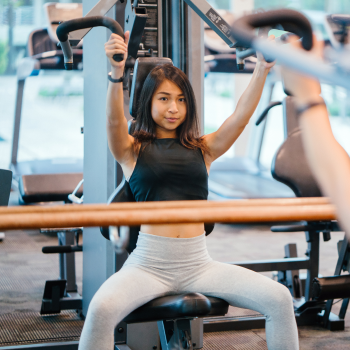
Тренажёрный зал
Вылепить тело свой мечты можно и даже нужно! Для этого вам понадобятся гантели, бодибары,
степ-платформы, резиновые амортизаторы и...
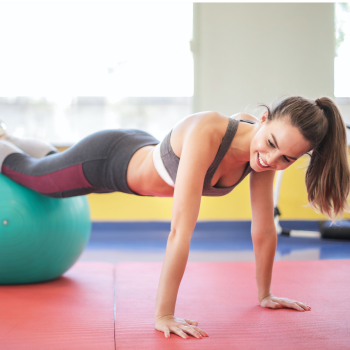
йога
Йога-латес делают осанку ровной, мышцы упругими, улучшают кровообращение и работу кишечника,
а
значит, способствует снижению лишнего веса.
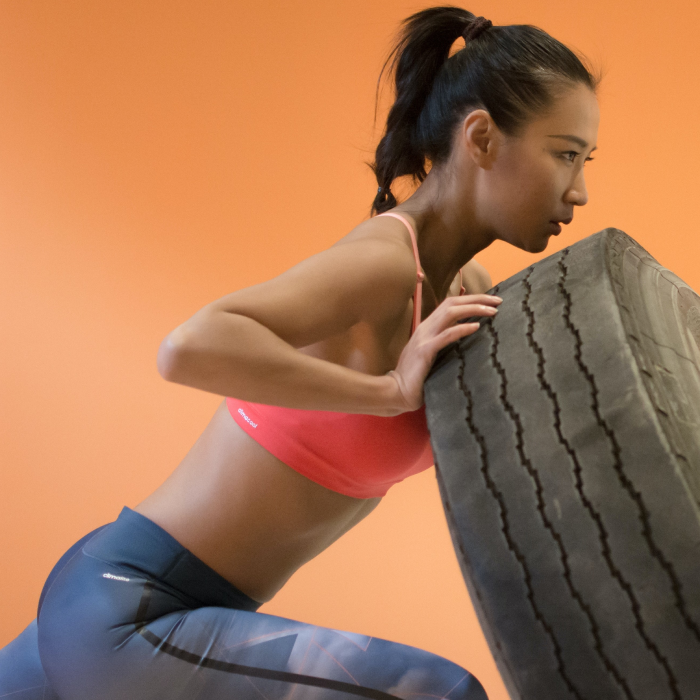
Кроссфит
Здесь вам придется бегать, качать, приседать, прыгать, жать, и все это — за конкретно
отведенные
промежутки времени.
Такие...
Такие...

Пилатес
Пилатес оздоравливает суставы и позвоночник, прорабатывает идеальный пресс, снижает вес и
учит правильно дышать.
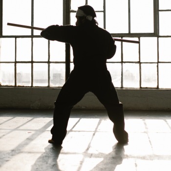
айкидо
Боевое искусство Тайланда иначе называют «муай-тай», что в переводе означает «свободный
бой».
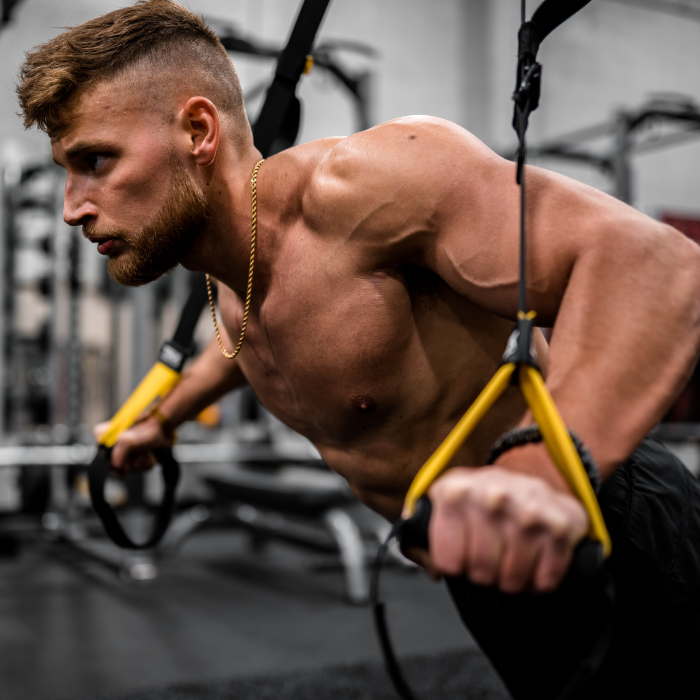
TRX Mix
Планка, отжимания с фиксацией ног, подтягивания к поясу, приседания, выпады, мостик, «пика»,
— эти обычные упражнения при использовании...
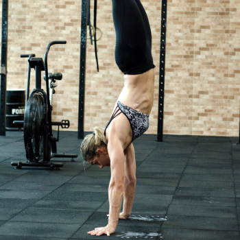
Пилатес (спина)
Здоровая спина-развитие подвижности и гибкости в области спины, снимает напряжение с мышц и
межпозвоночных сегментов
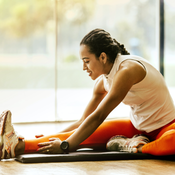
Body Stretch
Тренировки помогут избавиться от боли в мышцах и суставах, сделают тело гибким, стройным и
привлекательным. Занимаясь Body Stretch,...
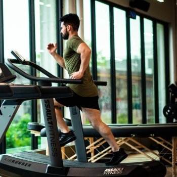
Функц. тренинг
Именно функциональная тренировка, нацеленная на развитие глубоко лежащих
мышц-стабилизаторов, большинство из которых мы не можем контролировать сознательно,
поможет...
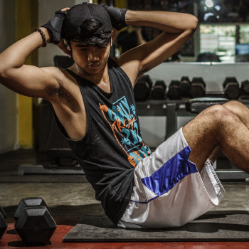
Fitness mix
Fitness mix для тех, кто скучает на обычных силовых тренировках и в тренажерном зале. Фитнес
микс - это...
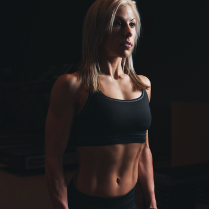
MFR stretch
Тренировка включает в себя энергичную разминку и непосредственно процесс расслабления и
растягивания, причем прорабатываются не только ноги, а...
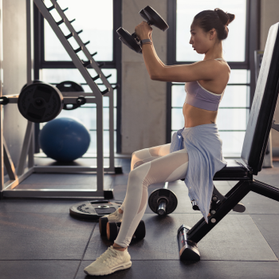
Body PUMP
Body PUMP - жиросжигающая тренировка на все тело (спина, руки, грудь, ноги, ягодицы, пресс)
сочетает в себе силовую...